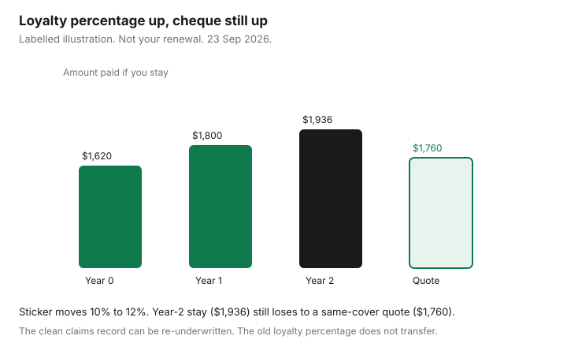

Insurance · Canada
Insurance Loyalty Discounts in Canada: When Staying Loyal Costs More Than Switching
A loyalty discount is a percentage off a price the insurer chose. If the underlying price rises faster than the percentage, the cheque still goes up, and a household that “has a discount” can be the expensive risk in the postal code. Multi-policy discounts are a different lever: they pay you for placing two contracts together, and they should be tested by pricing those contracts apart. Claims-free history is a third thing. It describes you. It is not a coupon printed on last year’s bill.
This page is the rate-creep test and the exit. Whether a bundle is worth it on identical cover is already written: use that worksheet, then come back here when the renewal is higher even after the sticker. Do not strip coverage to manufacture a win.
Disclosure: Broker quote portals, auto comparison sites, and home-insurance quote flows are offer types. Saving Optimizer may earn a commission if we later add partner links. We do not currently claim insurer or broker partnerships. We do not sell policies. The premium path below is a labelled illustration, not a quote. Education only.
Key takeaways
- A multi-policy discount and a tenure “loyalty” discount are different lines. Consumer explainers often cite 5–15% for multi-policy. Neither number is a statute, and neither is your renewal.
- Each renewal, price the bundle and the unbundled pair on the same limits.
- Track three years of actual premiums. A bigger loyalty percentage on a higher base can still cost more than switching.
- A clean claims record is information the next insurer can use. The old insurer’s loyalty percentage does not transfer with you.
- Ask for a match in writing. Leave only after the new declarations are in force, with no bare day.
Separate multi-policy discount from ‘loyalty’ pricing that hides rate creep
Read the renewal and force every discount into its own row. If the PDF will not itemize them, ask in writing. You are looking for three different ideas that ads collapse into “you saved”:
| Line | What it is | What it is not |
|---|---|---|
| Multi-policy | A reduction because auto and home, or auto and tenant, sit with the same insurer or group | Proof the pair is cheaper than two specialists. Test that with the bundle worksheet. |
| Loyalty or tenure | A reduction for the years you have stayed with that company | A cap on the base rate. The base can rise while the sticker gets larger. |
| Claims-free or conviction-free | A rating factor based on your record | A gift that disappears because you asked for a quote. The record is yours. See the next section before you assume the percentage moves. |
Write the base premium, each discount in dollars, and the amount you will actually pay. A 12% loyalty line on a base that jumped 18% is a raise. The percentage is not the bill.

Run a dual quote: keep bundle vs unbundle to specialists each renewal
Once each renewal cycle, not once per decade, price two structures on the limits from your one-sheet review.
- Keep the bundle. Ask the current insurer for the renewal with every discount listed, and for a re-quote if kilometres, drivers, or the rebuild number changed.
- Unbundle. Ask a broker for the auto market and the property market separately, and ask one direct writer for each line they actually sell. Same liability, same deductibles, same sewer and overland limits, same replacement-cost or actual-cash-value basis.
- Add the two unbundled premiums and compare with the bundled cheque. Include fees the quote forgot. A cheaper auto that dropped collision, or a home quote that dropped sewer backup, is not the unbundled winner. Reject it.
Province changes the auto half of this exercise. Ontario broker-versus-direct shopping, winter-tire offers, telematics, and deductible or mileage levers are Transportation guides. British Columbia’s optional ICBC choices and Québec’s private damage cover on top of SAAQ are different systems. Do not send a Québec driver an Ontario quote method and call it optimized. The property half — rebuild, water, settlement basis — is the same discipline everywhere those endorsements exist.
Broker portals and comparison sites are offer types. Use them to get a written proposal. Bind only when the proposal matches the sheet.
Track 3-year premium trajectory—loyalty often loses after year two
Keep a three-year column: base, loyalty dollars, multi-policy dollars, amount paid, and a note if coverage changed. Coverage cuts disguised as loyalty are the expensive version of “we looked after you.”
| Year | Base before loyalty | Loyalty sticker | Amount paid if you stay | Same-cover alternative |
|---|---|---|---|---|
| 0 (new) | $1,800 | 10% ($180) | $1,620 | You took this price |
| 1 | $2,000 | 10% ($200) | $1,800 | Not shopped in this sketch |
| 2 | $2,200 | 12% ($264) | $1,936 | $1,760 written quote |
The loyalty percentage rose from 10% to 12%. The cheque rose from $1,620 to $1,936. Staying in year 2 costs $176 more than the competing same-cover quote. Over the three payments, staying costs $1,620 + $1,800 + $1,936 = $5,356. Switching only in year 2, after two years of the incumbent, costs $1,620 + $1,800 + $1,760 = $5,180. The illustration does not say every Canadian renewal climbs by $200. It says you should be able to do this arithmetic on your own bill. If you never write the base down, the sticker wins the argument.
If the incumbent’s year-2 price is lower on the same cover, staying is the correct answer. Loyalty is not a moral failing. Unexamined loyalty is the expensive habit.
Claims-free discounts you keep even if you switch insurers
What moves with you is the record, not the old percentage. Auto insurers in provinces that share driving history can see claims and convictions. Property insurers ask about prior losses. A household with no claims can qualify for a claims-free factor at the next company. That is not the same as porting “15% loyalty” from the incumbent’s rating plan. The new insurer files its own factor. Your job is to answer the application accurately so the new price reflects the clean record instead of a default.
- Order or download the history the application will rely on, where your province allows it, before you dispute a quote that assumed a claim you did not have.
- Do not omit a loss to chase a factor. A misrepresentation is how claims get denied later. Education stops at honesty.
- A claims-free factor and a telematics score are different. Switching can end a telematics program. Read the telematics guide before you drop a device you still wanted.
- At-fault claims that are still inside the insurer’s lookback will be priced by the next insurer too. Switching does not launder a record. If the record is heavy, the win may be a deductible and kilometre review, not a new logo.
Script to ask your current insurer to match a written competing quote
Send this only when the competing quote is written and the limits match. A screenshot of a teaser rate is not a quote. Replace the brackets. Keep a copy.
Subject: Request to match a written quote before my renewal on [date]
I have a written quote for [auto / home / both] at [annual premium] with these limits: liability [amount]; dwelling or contents [amount] on a [replacement cost / actual cash value] basis; all-perils deductible [amount]; sewer backup limit [amount] and deductible [amount]; overland flood limit [amount] and deductible [amount], or “declined / not offered” if that is the truth. My renewal with you is [amount]. Please confirm in writing, before [date], whether you will match that price on the same limits, and list the loyalty and multi-policy dollars already inside my renewal. I will not cancel until any new declarations are in force. This is a request for a price on the same cover, not a request to remove endorsements.
If they match, stay, and file the email with the declarations. If they match by cutting a water limit, that is a no. If they do not reply before the expiry, bind the alternative only under the exit checklist. Do not let the renewal auto-withdraw and then try to unwind it in a panic.
FSRA’s Ontario auto consumer material (used 23 Sep 2026) is a useful tone for the conversation with a broker, agent, or company: you may shop, and you should understand who represents whom. It does not require an insurer to match a competitor. The script asks. It does not pretend there is a legal right to the other company’s price.
Exit checklist: overlapping effective dates so you never go bare
A gap is not a clever way to save a day of premium. On compulsory auto insurance it can be an offence and a much larger premium later. On a mortgaged home it can breach the lender’s requirement. On life insurance it can leave the household uncovered while a new application is still being underwritten.
- New policy bound in writing. Effective date on or before the old expiry. You have the declarations or a binder that names the limits you shopped, including water endorsements and the settlement basis.
- Mortgagee or loss payee shown on the new home policy before you cancel the old one. Send the lender what they asked for.
- Cancel the old policy effective when the new one starts, or the next day if both insurers confirm there is no uncovered hour and you accept any overlap premium. Get the cancellation confirmation.
- Life and travel medical: do not lapse the old contract until the new one is delivered and paid. Replacing permanent life can forfeit cash value. Read term versus whole life before you replace anything with cash value.
- Move the pre-authorized debit. Return a telematics device if the old contract required it. Keep the old PDF for claims that happened on its term.
- Mid-term cancellation can be short-rated. Prefer the renewal date unless the coverage gap you are leaving (a missing overland grant, a wrong driver) is more dangerous than the penalty.
- Put next year’s 45-day reminder on the calendar the same day. The new insurer’s year-two price is how this cycle starts again.
Hardship is not a reason to buy a product this site does not sell. If the renewal is unaffordable because income dropped, the levers that stay legitimate are an honest kilometre change, a deductible you can cash-flow, and a same-cover re-shop. Dropping liability or flood cover to make the withdrawal succeed is how a bad year becomes a worse one. The deductible test is the home deductible guide. The kilometre test is the Transportation guide. Use them. Do not invent a fourth product.
Sources & date stamps
- FSRA, working with your broker, agent, or insurance company — Ontario auto shopping roles; insurers are not required to match a competitor (used 23 Sep 2026).
- Financial Consumer Agency of Canada, get insurance — shop coverage and price together (used 23 Sep 2026).
- Saving Optimizer bundle guide — 5–15% multi-policy band cited from consumer explainers, not as a legal rate (20 Sep 2026 page, reused here as a label only).
- Labelled three-year arithmetic on this page — illustration, not a market study.
Frequently asked questions
Is a loyalty discount a reason to stay with an insurer?
Only if the amount you pay is still competitive on the same limits. A larger loyalty percentage on a higher base can be a raise. Track the dollars paid for three years, not the percentage in the ad.
What is the difference between loyalty and a multi-policy discount?
Loyalty or tenure is a reduction for staying with that company. A multi-policy discount is for placing two contracts together. Consumer explainers often cite 5 to 15 percent for multi-policy. Neither figure is a law. Test the bundle by pricing the policies apart.
Do we keep a claims-free discount if we switch?
You keep the record, not the old percentage. The next insurer can price a clean history with its own factor. Omitting a claim to get that factor is a misrepresentation, not a savings plan.
How do we leave without a gap?
Bind the new policy in writing first, with the same limits and the mortgagee named if there is a lender. Then cancel the old policy so the dates overlap. Do not lapse life insurance until the new policy is delivered and paid.
Is this insurance advice?
No. Education only. Broker portals and quote sites are offer types. We do not claim a partnership, and an insurer is not required to match a competitor.